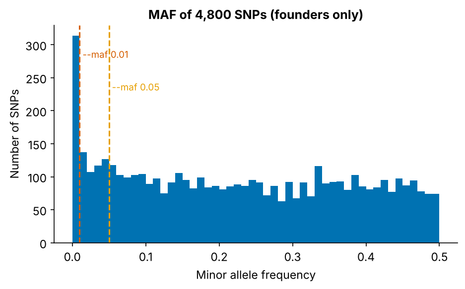
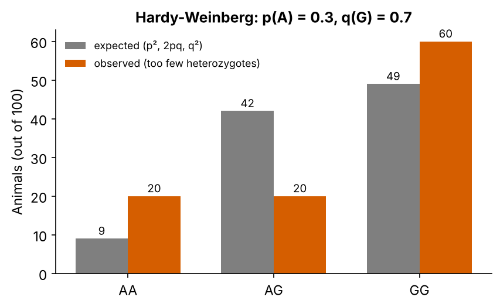
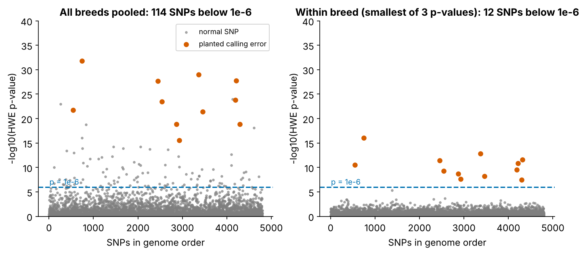

7 Allele frequency and Hardy-Weinberg equilibrium
After missingness, the next two SNP checks ask simple questions. Is this SNP variable enough to be useful? And do its genotype counts look the way genetics says they should?
7.1 Allele frequency and MAF
At every SNP each animal carries two copies, so 100 animals carry 200 allele copies. The allele frequency is the share of those copies that carry a given allele. The rarer of the two alleles is the minor allele, and its frequency is the minor allele frequency (MAF).
A worked example. Eight animals have these genotypes at one SNP: CT, TT, CC, TT, TT, CT, TT, TT.
| Genotype | Animals | C copies | T copies |
|---|---|---|---|
| CC | 1 | 2 | 0 |
| CT | 2 | 2 | 2 |
| TT | 5 | 0 | 10 |
| Total (16 copies) | 8 | 4 | 12 |
So p(C) = 4/16 = 0.25 and p(T) = 12/16 = 0.75. C is the minor allele, and MAF = 0.25. A SNP with MAF = 0 is monomorphic: every animal has the same genotype, so it tells us nothing about differences between animals.
7.1.1 Step 1: compute frequencies
PLINK has four ways to count alleles. All four were run on the same file; here is what each writes and how to read it.
--freq: the minor allele frequency of every SNP
plink --bfile cattle --cow --freq --out freq
head -3 freq.frq CHR SNP A1 A2 MAF NCHROBS
1 snp00001 G A 0.02492 602
1 snp00002 C A 0.04167 600- A1 is the minor allele and MAF its frequency: G is on 2.5% of chromosomes at snp00001.
- NCHROBS (chromosomes observed) is 602, not 2 × 361 = 722, because PLINK counts founders only by default (the log says
Allele frequencies (founders only)). A calf’s alleles are copies of its parents’ alleles, so counting calves would count some alleles twice. snp00002 has 600 because one founder is missing there. - On the X chromosome a bull carries one copy, so NCHROBS is smaller (497 at snp04551).
Add --nonfounders to count all 361 animals: snp00001 then has MAF 0.0292 from 720 chromosomes. Use the default for QC; --nonfounders is for a population with no pedigree recorded, where every animal is a founder anyway.
--freq counts: the counts behind the frequency
plink --bfile cattle --cow --freq counts --out freqc
head -3 freqc.frq.counts CHR SNP A1 A2 C1 C2 G0
1 snp00001 G A 15 587 0
1 snp00002 C A 25 575 1C1 and C2 are the numbers of A1 and A2 copies (15 / 602 = 0.0249, the MAF above), and G0 the number of founders with a missing genotype. Counts are what you need for minor allele count filters (--mac) and for small samples, where “MAF 0.01” might mean a single copy.
--freqx: genotype counts
plink --bfile cattle --cow --freqx --out freqx
head -3 freqx.frqxCHR SNP A1 A2 C(HOM A1) C(HET) C(HOM A2) C(HAP A1) C(HAP A2) C(MISSING)
1 snp00001 G A 0 15 286 0 0 0
1 snp00002 C A 1 23 276 0 0 1Instead of alleles, it counts animals: at snp00001 no founder is G/G, 15 are G/A and 286 are A/A. The HAP columns are for haploid calls (bulls on the X). These are the counts you would check by hand for a Hardy-Weinberg calculation, or use to spot a SNP with no heterozygotes at all.
--freq --within breed.clst: one line per SNP per group
The cluster file has three columns, FID, IID and group, with no header:
ANG ANG_001 ANG
ANG ANG_002 ANGplink --bfile cattle --cow --freq --within breed.clst --out freq_breed
grep -E "snp00001|snp00706" freq_breed.frq.strat CHR SNP CLST A1 A2 MAF MAC NCHROBS
1 snp00001 ANG G A 0.0125 2 160
1 snp00001 HOL G A 0 0 222
1 snp00001 NDA G A 0.05909 13 220
5 snp00706 ANG A C 0.6456 102 158
5 snp00706 HOL A C 0.4545 100 220
5 snp00706 NDA A C 0.3909 86 220The output (.frq.strat) has 3 lines per SNP here (14,400 lines). MAC is the minor allele count in that group. Two things catch people out:
- The column called MAF is the frequency of A1 as chosen for the whole file, not the minor allele within each breed. At snp00706 the A allele is the minor allele overall, but in Angus its frequency is 0.65: in Angus, C is the minor allele. Read the column as “frequency of A1 in this group”.
- Founders only, as before: the 120 family animals are left out, so the Holstein and N’Dama groups have 222 and 220 chromosomes (111 and 110 founders), not 282 and 280.
Use the per-breed version to find SNPs that are rare overall but common in one breed (snp00001 is absent in Holstein but at 6% in N’Dama), and to apply MAF filters within breed.
7.1.2 Step 2: look at the distribution and choose a threshold

Why remove rare SNPs at all? With MAF 0.01 and 300 animals there are only about 6 copies of the minor allele, so any test on that SNP rests on a handful of animals. Rare SNPs give unstable estimates (you will see an odds ratio of infinity in Chapter 12) and some analyses, such as PCA, break completely on monomorphic SNPs (Chapter 17).
| Analysis | Typical --maf |
|---|---|
| Association study | 0.01 to 0.05 |
| PCA, relatedness, admixture | 0.05 |
| Runs of homozygosity, selection signatures | Often no MAF filter, or filter within breed |
7.2 Hardy-Weinberg equilibrium (HWE)
If animals mate at random and nothing else disturbs a SNP, genotype frequencies follow a fixed rule from the allele frequencies p and q = 1 - p:
\[ P(AA) = p^2, \qquad P(AG) = 2pq, \qquad P(GG) = q^2 \]
Take a SNP where p(A) = 0.3 and q(G) = 0.7. The expected shares are 0.3² = 0.09, 2 × 0.3 × 0.7 = 0.42 and 0.7² = 0.49, so in 100 animals we expect 9 AA, 42 AG and 49 GG.

The observed counts in the figure (20, 20, 60) give exactly the same allele frequency (A = (2 × 20 + 20) / 200 = 0.3), but only half the expected heterozygotes and more than twice the expected AA animals. A classic cause is a genotype-calling error in which the calling software misses heterozygotes. PLINK tests the departure with an exact test, which works well even for rare SNPs. A small p-value means the genotype counts are unlikely under HWE.
But genotyping errors are not the only cause of departure from HWE. Selection, inbreeding, a deletion on the SNP, and above all mixing populations also do it. That last one is the important trap in livestock.
7.2.1 Step 3: run the test
plink --bfile cattle --cow --hardy --out hwe CHR SNP TEST A1 A2 GENO O(HET) E(HET) P
1 snp00001 ALL G A 0/15/286 0.04983 0.04859 1
1 snp00001 AFF G A 0/3/116 0.02521 0.02489 1
1 snp00001 UNAFF G A 0/12/168 0.06667 0.06444 1Each SNP gets three lines: all animals (ALL), cases (AFF) and controls (UNAFF). GENO is the count of hom A1 / het / hom A2; O(HET) and E(HET) are observed and expected heterozygosity. Why three lines? A SNP that really causes a disease can be out of HWE in cases for a genuine biological reason. That is why the --hwe filter in PLINK 1.9 uses controls only when a case/control phenotype is present.
7.2.2 Step 4: watch out for the Wahlund effect
When you pool breeds that have different allele frequencies, you always see fewer heterozygotes than expected, even if each breed is perfectly in HWE. This is called the Wahlund effect. Picture one breed where nearly all animals are AA and another where nearly all are GG. Pool them and the “population” has an allele frequency near 0.5, so HWE expects about half the animals to be AG, but almost none are.

| HWE threshold | SNPs failing, breeds pooled | of which planted errors | SNPs failing in any breed, tested separately | of which planted errors |
|---|---|---|---|---|
| 10⁻⁴ | 264 | 12 | 13 | 12 |
| 10⁻⁶ | 114 | 12 | 12 | 12 |
| 10⁻¹⁰ | 40 | 12 | 6 | 6 |
Pooled at 10⁻⁶, the filter would have thrown away 102 perfectly good SNPs. Within breed, it found exactly the 12 bad ones. So in multi-breed data, run the test in each breed and remove a SNP if it fails in any of them:
for b in ANG HOL NDA; do
awk -v b=$b '$3==b {print $1, $2}' breed.clst > keep_$b.txt
plink --bfile cattle --cow --keep keep_$b.txt --hardy --out hwe_$b
done
awk '$3=="ALL" && $9 < 1e-6 {print $2}' hwe_ANG.hwe hwe_HOL.hwe hwe_NDA.hwe | sort -u > hwe_fail.txt
plink --bfile cattle --cow --exclude hwe_fail.txt --make-bed --out cattle_hwe7.2.3 Step 5: choose a threshold
The p-value threshold works in the opposite direction from MAF: a smaller number is gentler. --hwe 0.001 removes more SNPs than --hwe 1e-10. In livestock association studies, 10⁻⁶ applied within breed is a common choice. For selection-signature work be careful, because strong selection can itself push a SNP out of HWE, and that is exactly what you are looking for.
The options change which animals are tested and how the p-value is computed. On the raw file:
plink --bfile cattle --cow --hwe 1e-6 --make-bed --out h1 # controls (and founders) only
plink --bfile cattle --cow --hwe 1e-6 midp --make-bed --out h2 # mid-p exact test
plink --bfile cattle --cow --hwe 1e-6 include-nonctrl --make-bed --out h3 # cases tooh1: --hwe: 63 variants removed due to Hardy-Weinberg exact test.
h2: --hwe: 66 variants removed due to Hardy-Weinberg exact test.
h3: --hwe: 114 variants removed due to Hardy-Weinberg exact test.- Default: when a case/control phenotype is loaded, PLINK 1.9 tests controls only, so a real disease SNP that is out of HWE in cases is not thrown away. Like
--freq, it uses founders only; add--nonfoundersto include calves (which breaks the independence the test assumes). midp: the mid-p version of the exact test gives slightly smaller p-values (snp02321: 3.7 × 10⁻⁶ instead of 4.7 × 10⁻⁶), so it removes a few more SNPs (66 instead of 63). It is a little less conservative and is often recommended; say which one you used.--hardy midpreports mid-p values.include-nonctrl: tests all founders, cases included. Use it for quantitative traits or when no phenotype is loaded (then it makes no difference).- On the X chromosome, bulls carry one copy, so PLINK leaves them out of the test.
plink2 --freq writes .afreq, --geno-counts replaces --freqx, and --hardy writes .hardy (autosomes) and .hardy.x. --maf works as in 1.9, but --hwe does not: PLINK 2.0 has no special handling of cases and controls, so it tests all founders, cases included. On the raw practice file, plink2 --hwe 1e-6 removed 113 SNPs where PLINK 1.9 (controls only) removed 63 (Chapter 17). For a controls-only filter, test the controls in one run and exclude the failures in the next (60 autosomal SNPs here; the other 3 that PLINK 1.9 flagged are on the X, which PLINK 2.0 tests separately and reports in hwe_ctrl.hardy.x):
plink2 --bfile cattle --cow --keep-if "PHENO1 == 1" --hardy --out hwe_ctrl # 217 controls
awk 'NR > 1 && $NF < 1e-6 {print $2}' hwe_ctrl.hardy > hwe_fail.txt
plink2 --bfile cattle --cow --exclude hwe_fail.txt --make-pgen --out cattle_hwe--hwe also takes an optional second number k that tightens the threshold as the sample grows (the cut-off becomes p × 10-nk for n animals). PLINK 2.0 prints a warning suggesting it when the number of genotyped animals varies between SNPs; in multi-breed livestock data the within-breed test above matters far more.
7.3 Exercises
Try each question first, then open the answer. The challenge goes a step further than the chapter.
1. How many SNPs have a MAF below 0.05 in the whole dataset, and how many are monomorphic?
In freq.frq 802 SNPs have MAF < 0.05 and 83 have MAF = 0.
2. With --freq --within breed.clst, how many SNPs are monomorphic in N’Dama alone?
awk 'NR > 1 && $3 == "NDA" && $7 == 0' fw.frq.strat | wc -l # 578Column 7 is the MAC (minor allele count); MAC = 0 means the breed carries only one allele.
Challenge. Count the SNPs with HWE p < 1e-4 in the pooled data, then in each breed separately (the union of the three lists). Explain the difference.
plink --bfile cattle --cow --hardy --out h
awk '$3 == "ALL" && $9 < 1e-4' h.hwe | wc -l # 264 pooled
for b in ANG HOL NDA; do
plink --bfile cattle --cow --keep k_$b.txt --hardy --out h_$b
awk '$3 == "ALL" && $9 < 1e-4 {print $2}' h_$b.hwe
done | sort -u | wc -l # 13 within breedsPooling the breeds creates a heterozygote deficit at every SNP whose frequency differs between breeds (the Wahlund effect), so 264 SNPs “fail” although only 13 fail inside any breed. Removing the 264 would throw away many of the most informative SNPs for breed differences.